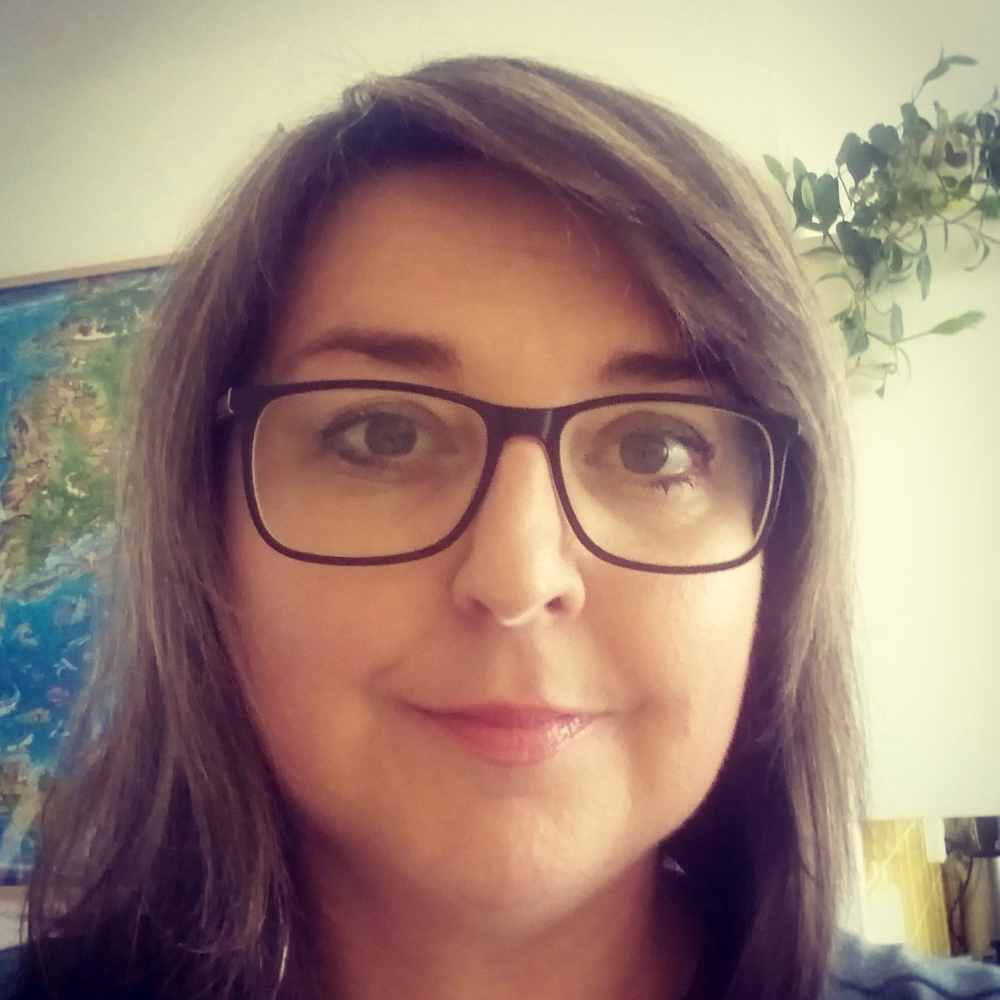

O Soně

Jmenuji se Soňa a původní profesí jsem zubní technik - CAD/CAM specialista. Kromě čtení, kreativní tvorby a programování, ráda spojuji příjemné s užitečným. K vytvoření aplikace určené pro celou rodinu mě inspirovaly moje tři děti. Mají totiž rády deskové hry, kvízy a výlety vlakem do blízkého i dalekého okolí. A protože ve vlaku čas neutíká, je dobré mít po ruce něco, co nás zabaví...